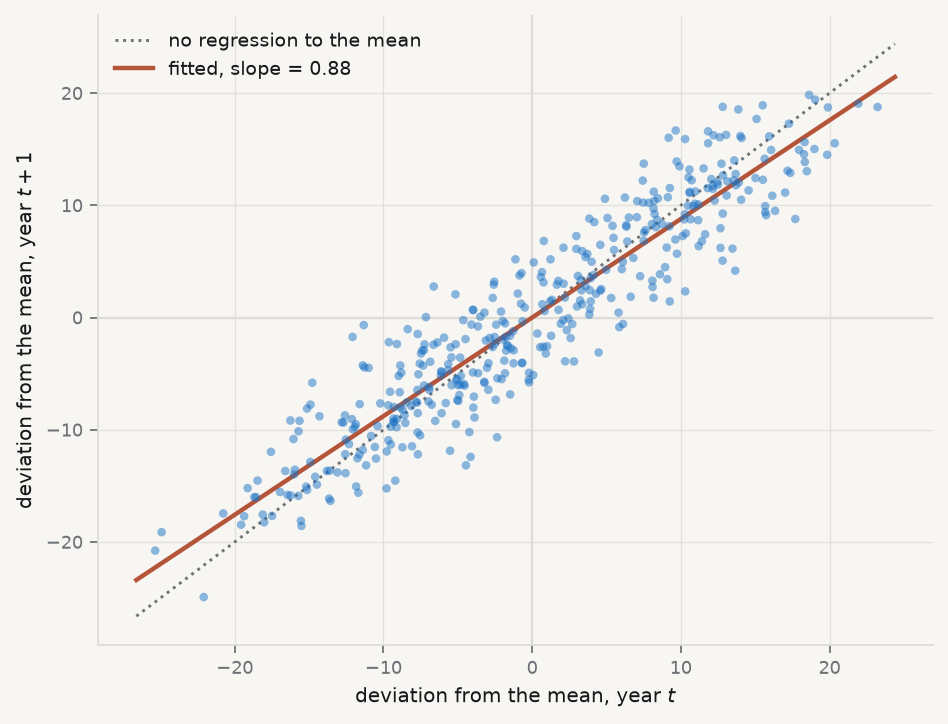

Adrien-Marie Legendre published the method of least squares in 1805, in an appendix to a book about the orbits of comets. Four years later Carl Friedrich Gauss published it too, in Theoria Motus, and added that he had been using it since 1795. The priority quarrel that followed was bitter and is still not entirely settled. What matters here is what Gauss added that Legendre did not have: not the recipe, but the justification. Legendre offered least squares as a sensible way to reconcile discordant observations. Gauss asked a different question — under what conditions is this the best you can do? — and that question is the subject of this chapter.
Carl Friedrich Gauss · 1777–1855
Least squares, and the theorem that says when it is the best you can do.
Christian Albrecht Jensen, 1840. Public domain, via Wikimedia Commons.
Adrien-Marie Legendre · 1752–1833
Published least squares first, in 1805. This caricature is the only likeness of him known to exist.
Julien-Léopold Boilly, undated. Public domain, via Wikimedia Commons.
Set the problem up. You have \(n\) observations, a response \(y\), and a matrix \(X\) holding a column of ones and \(p-1\) predictors. You want coefficients \(\beta\) such that \(X\beta\) is close to \(y\). Least squares defines “close” as the sum of squared vertical distances, and chooses
Squared, rather than absolute, distance is worth pausing on, because the choice is not obvious and it has consequences you will meet later in the chapter. Squaring makes the objective differentiable everywhere, which is what delivers the closed-form solution below; it also makes the fitted values a linear function of \(y\), which is what makes the whole diagnostic apparatus possible. The price is that squaring gives a doubled error four times the weight of a single one, so least squares is structurally sensitive to observations far from the line. Every technique in this chapter for finding influential points is, in a sense, paying off the debt incurred by that square.
Differentiating and setting to zero gives the normal equations\(X^{\top}X\beta = X^{\top}y\), whose solution — whenever \(X^{\top}X\) can be inverted — is
\[
\hat\beta \;=\; (X^{\top}X)^{-1} X^{\top} y .
\]
Every equation in this chapter is something you can execute, and executing it is the fastest way to find out whether you have understood what it claims. The normal equations are the first: solve them by hand and the answer must be, to floating-point precision, whatever statsmodels returns.
Run it: solve the normal equations by hand
import sys, warningssys.path.insert(0, "../slides"); sys.path.insert(0, "..")warnings.filterwarnings("ignore")from plotstyle import setup, CLplt = setup()import numpy as np, pandas as pd, statsmodels.api as sm, qmibd = (qmib.load("core") .dropna(subset=["gdp_pc_eur", "productivity_idx"]) .reset_index(drop=True))X = sm.add_constant(d["productivity_idx"]).to_numpy()y = d["gdp_pc_eur"].to_numpy()# beta_hat = (X'X)^-1 X'y — written as solve(), never as inv(), because# inverting a matrix to multiply it by a vector is slower and less stable.beta_hand = np.linalg.solve(X.T @ X, X.T @ y)beta_sm = sm.OLS(y, X).fit().paramsprint("by hand ", np.round(beta_hand, 6))print("statsmodels ", np.round(beta_sm, 6))print("agree to ", f"{np.abs(beta_hand - beta_sm).max():.2e}")
by hand [-86118.084706 1111.257354]
statsmodels [-86118.084706 1111.257354]
agree to 2.49e-09
That is an algebraic fact. It requires no assumption about the world, no probability, no error term. Feed it any numbers and it returns coefficients. This is exactly why diagnostics are necessary: the formula never refuses. It has no way to tell you that the relationship is curved, that one country is dragging the whole line, or that the standard errors it reports are fiction. It returns the same confident four decimal places either way.
The statistical content arrives only when you attach a model,
\[
y \;=\; X\beta + \varepsilon ,
\]
and make claims about \(\varepsilon\). The Gauss–Markov theorem says that if the model is correctly specified, if \(\operatorname{E}[\varepsilon \mid X] = 0\), and if the errors have constant variance and are mutually uncorrelated, then \(\hat\beta\) is the Best Linear Unbiased Estimator: no other estimator that is both linear in \(y\) and unbiased has smaller variance. Note what is not on that list. Normality is not required for Gauss–Markov. It is required for something else — the exactness of the \(t\) and \(F\) distributions in small samples — and confusing the two is one of the most common errors in applied work.
The word “regression” itself arrived later and by accident. Francis Galton, studying the heights of parents and children, found that tall parents had children who were tall but less tall, and called this “regression towards mediocrity” (Galton 1886). He was naming a substantive biological phenomenon. The name stuck to the statistical method he had used to find it, which is why a technique for fitting conditional means is called by a word that means moving backwards.
From the archive · Galton, 1886
Galton’s claim was about heredity, but the phenomenon is general and it is not a fact about biology: it follows from the arithmetic of an imperfect correlation. Whenever two measurements of the same thing are less than perfectly correlated, the extremes of the first are, on average, less extreme in the second — not because anything pulled them back, but because part of what made them extreme was noise, and noise does not repeat.
It is worth seeing this happen in the data this book uses. These are fixtures rather than observations, which for once does not weaken the demonstration: regression towards the mean is a consequence of imperfect correlation, not of economics, so it turns up in any series where this year predicts next year imperfectly — generated or observed. Take each country’s productivity in a given year, expressed as a deviation from that year’s cross-country average, and ask what that deviation looks like the following year.
Show the code that reproduces Galton’s finding
import sys, warningssys.path.insert(0, "../slides"); sys.path.insert(0, "..")warnings.filterwarnings("ignore")from plotstyle import setup, CLplt = setup()import qmib, numpy as np, pandas as pdd = (qmib.load("core").dropna(subset=["productivity_idx"]) .sort_values(["geo", "time"]))d["next"] = d.groupby("geo")["productivity_idx"].shift(-1)pairs = d.dropna(subset=["next"]).copy()# Deviation from the cross-country mean, this year and the next.pairs["dev"] = pairs["productivity_idx"] - pairs.groupby("time")["productivity_idx"].transform("mean")pairs["dev_next"] = pairs["next"] - pairs.groupby("time")["next"].transform("mean")slope, intercept = np.polyfit(pairs["dev"], pairs["dev_next"], 1)fig, ax = plt.subplots(figsize=(6.0, 4.6))lim = np.array([pairs["dev"].min() *1.05, pairs["dev"].max() *1.05])ax.plot(lim, lim, ls=":", lw=1.3, color=CL.muted, label="no regression to the mean")ax.plot(lim, intercept + slope * lim, lw=2, color=CL.warn, label=f"fitted, slope = {slope:.2f}")ax.scatter(pairs["dev"], pairs["dev_next"], s=15, color=CL.accent, alpha=0.5, edgecolor="none", zorder=3)ax.axhline(0, color=CL.line, lw=1, zorder=1); ax.axvline(0, color=CL.line, lw=1, zorder=1)ax.set_xlabel("deviation from the mean, year $t$")ax.set_ylabel("deviation from the mean, year $t+1$")ax.legend(frameon=False, fontsize=8.5, loc="upper left")fig.tight_layout()

Figure 3.1: Regression towards the mean in the course fixtures, 2010–2024. Each point is one country-year: its deviation from the cross-country average that year, against its deviation the next. A slope below 1 is Galton’s phenomenon. The values are generated, not observed — but the phenomenon is a property of imperfect correlation, so it appears here for the same reason it appears in real data.
The dotted line is what perfect persistence would look like: a country as far above average next year as it was this year. The fitted line is flatter. The most productive decile keeps about six-sevenths of its lead from one year to the next, and the least productive recovers by a comparable amount — with nothing whatever having been done to either.
The warning Galton’s contemporaries missed is the one to carry forward. If you select the extremes and then measure them again, they will improve, and the improvement will look like the effect of whatever you did in between. Chapter 10 returns to this as a threat to causal inference, where it has a name: regression to the mean is the reason a single-group before-and-after comparison is not evidence.
3.2 Adequacy, validity, robustness
These three words get used loosely and they are not synonyms. The distinction organises everything that follows.
Adequacy — whether the model describes the data you actually have. An adequate model leaves residuals with no remaining structure: nothing in what is left over could have been used to predict \(y\) better. Adequacy is assessed against the sample, and it is mostly a question you answer with plots.
Validity — whether the inferences you draw from the model are warranted: whether the standard errors, confidence intervals and \(p\)-values mean what they claim. A model can be adequate and its inference invalid, most commonly because the errors are heteroscedastic or dependent. Validity is a question about the sampling distribution, not about fit.
Robustness — whether your conclusions survive reasonable changes to the specification, the sample or the estimator. A robust finding is one that does not depend on a single influential observation, one functional form, or one way of computing standard errors. Robustness is a question about stability.
Keeping them apart tells you what a given failure actually costs, and this is the part most often got wrong. The four classical assumptions do not all protect the same thing:
If this fails
\(\hat\beta\) is
Standard errors are
So the damage is to
Correct specification
biased
meaningless
the estimate itself
Constant variance
unbiased
wrong
validity only
Independent errors
unbiased
wrong, usually far too small
validity only
Normal errors
unbiased
fine in large samples
almost nothing, if \(n\) is large
Read the table twice. Only the first row damages the coefficient. Rows two and three leave your estimate untouched and destroy your uncertainty — you have the right number with the wrong error bar, which matters enormously if the question is whether an effect can be distinguished from zero. Row four, the assumption students worry about most, is the one that matters least.
A model with \(R^2 = 0.95\) can fail all of it. This is not hypothetical: Anscombe’s four datasets share, to two decimal places, the same means, variances, correlation, regression line and \(R^2\), and they are utterly different (Anscombe 1973).
Figure 3.2: Anscombe’s quartet. Identical means, variances, correlations, fitted lines and \(R^2\) — and only the first is a dataset the line describes. Data from Anscombe (1973), Table 1.
Every one of those four panels reports \(R^2 = 0.67\) and the same fitted line. Only in the first is that line a description of the data. In the second the relationship is deterministic and curved — the model is not wrong about the strength of the association so much as wrong about its shape, and no amount of extra data will fix it, because more observations of a parabola still make a parabola. In the third a single aberrant point has tilted a line that would otherwise pass almost exactly through the rest; delete it and both the slope and the residual variance change sharply. In the fourth every \(x\) but one is identical, so the slope is determined entirely by one observation: delete it and the slope is not merely different, it is undefined, because \(X^{\top}X\) becomes singular.
Anscombe’s point was not that summary statistics are useless. It was that they are insufficient, and that the missing information is available for the cost of a plot.
3.3 What the residual knows
Write \(\hat y = X\hat\beta\). Substituting the estimator,
\[
\hat y \;=\; X(X^{\top}X)^{-1}X^{\top} y \;=\; Hy ,
\]
where \(H = X(X^{\top}X)^{-1}X^{\top}\) is the hat matrix — so named because it puts the hat on \(y\). Geometrically it is the orthogonal projection onto the column space of \(X\): it takes the \(n\)-dimensional vector of observations and casts its shadow onto the \(p\)-dimensional subspace the model can reach. That picture is worth holding, because it makes the next two properties obvious rather than algebraic. \(H\) is symmetric (\(H = H^{\top}\)) and idempotent (\(HH = H\)) — projecting a shadow again does nothing, since it is already flat.
The residual vector is what the projection could not reach,
\[
e \;=\; y - \hat y \;=\; (I - H)\, y ,
\]
and it is orthogonal to every column of \(X\) by construction. That orthogonality is the reason residual plots are informative and the reason they can mislead: \(e\) is guaranteed to be uncorrelated with each predictor whether or not the model is right, so a flat residual plot against \(x\) is not evidence of anything. What is not guaranteed is the absence of non-linear structure, which is exactly what you are looking for.
Now the consequence that governs every diagnostic below. If \(\operatorname{Var}(\varepsilon) = \sigma^2 I\), then
The residuals do not have constant variance even when the errors do. An observation with large \(h_{ii}\) has a residual squeezed towards zero as a matter of arithmetic, not because the model fits it well. The most dangerous points therefore look like the best-behaved ones. This is why raw residuals are the wrong thing to plot, and why everything below is built on the standardised residual
which divides out the arithmetic squeeze and restores comparability. Plotting \(r_i\) against \(\hat y_i\) is the single most informative diagnostic there is (Anscombe and Tukey 1963). Under an adequate model the cloud is structureless: flat, centred on zero, of even width. Curvature means the functional form is wrong. A widening fan means the variance is not constant. Both are visible instantly and neither is visible in \(R^2\).
Why plot against \(\hat y\) rather than against \(x\)? Because with several predictors there is no single \(x\) to use, and \(\hat y\) is the one-dimensional summary the model actually commits to. It is also the axis along which heteroscedasticity usually manifests, since the spread of an economic quantity so often scales with its level.
Figure 3.3: Diagnostics for GDP per capita on the productivity index — the regression Session 02 fitted. Left: standardised residuals against fitted values, with a LOWESS smoother (Cleveland 1979). Right: the scale–location plot, which removes the sign so that changing spread is easier to see.
Read Figure 3.3 the way a referee would, which means saying what you looked for before saying what you saw. In the left panel you are looking for curvature in the smoother and for a cloud of even vertical width; the smoother drifts rather than sitting flat, which says a straight line is missing some of the shape of the relationship between productivity and income. In the right panel you are looking for a trend, and there is one: the spread of the residuals grows with the fitted value: the wealthier the country-year, the wider the spread of what the model gets wrong. Whether that is true of Europe is not something these fixtures can tell you — but it is true of this dataset, and it is what the standard errors below have to contend with.
Neither finding is fatal. Both change what you are allowed to say — the first about the functional form, the second about the standard errors — and the rest of this chapter is about what to do with each.
3.4 Goodness of fit, and what it cannot tell you
Before the diagnostics, the summary statistics they are meant to supplement. The total variation in \(y\) splits into the part the model accounts for and the part it does not,
That decomposition holds only because the residuals are orthogonal to the fitted values, which is a property of least squares with an intercept and not a law of nature. Fit without an intercept and \(R^2\) can be negative.
Its defect is the one Anscombe exploited: \(R^2\) cannot fall when a predictor is added, however irrelevant, because the extra column can always be given a coefficient of zero. Two corrections are standard.
Adjusted \(R^2\) — \(R^2\) with a penalty for the parameters spent: \[
R^2_{\text{adj}} \;=\; 1 - \frac{\mathrm{RSS}/(n-p)}{\mathrm{TSS}/(n-1)} .
\] It can decrease when a useless variable is added, which is the point. It is still not a model-selection criterion — see AIC below.
Residual standard error — the typical size of a residual, in the units of \(y\): \[
\mathrm{RSE} \;=\; s \;=\; \sqrt{\frac{\mathrm{RSS}}{n-p}} .
\] Unlike \(R^2\) it is not unitless, which makes it the more honest number to report: “typically wrong by 6,000 euros” means something, where “\(R^2 = 0.63\)” means something only relative to the variance of this particular sample.
Run it: the three fit statistics from their definitions
model = sm.OLS(d["gdp_pc_eur"], sm.add_constant(d["productivity_idx"])).fit()n, p =int(model.nobs), int(model.df_model) +1resid = model.resid.to_numpy()rss = (resid **2).sum()tss = ((d["gdp_pc_eur"] - d["gdp_pc_eur"].mean()) **2).sum()r2_hand =1- rss / tssadj_hand =1- (rss / (n - p)) / (tss / (n -1))rse_hand = np.sqrt(rss / (n - p))print(f"{'':14}{'by hand':>14}{'statsmodels':>14}")print(f"{'R²':14}{r2_hand:14.6f}{model.rsquared:14.6f}")print(f"{'adjusted R²':14}{adj_hand:14.6f}{model.rsquared_adj:14.6f}")print(f"{'RSE':14}{rse_hand:14.4f}{np.sqrt(model.mse_resid):14.4f}")print(f"\nTypical miss: {rse_hand:,.0f} euros of GDP per capita, "f"against a mean of {d['gdp_pc_eur'].mean():,.0f}.")
by hand statsmodels
R² 0.627259 0.627259
adjusted R² 0.626384 0.626384
RSE 9376.0020 9376.0020
Typical miss: 9,376 euros of GDP per capita, against a mean of 30,403.
Note what the last line does that \(R^2 = 0.63\) does not: it puts the error in euros, next to the quantity being predicted, where a reader can judge whether it is tolerable for the decision at hand.
3.5 Leverage: which observations can move the line
Leverage — the diagonal element \(h_{ii}\) of the hat matrix, equal to \(\partial \hat y_i / \partial y_i\): how much the fitted value at observation \(i\) responds to a change in the observed value at \(i\). Leverage is a property of \(X\) alone. It does not involve \(y\) at all, so an observation can have high leverage and fit perfectly.
That derivative reading is the one to carry. If \(h_{ii} = 0.9\), then moving that observation’s \(y\) up by one unit drags its own fitted value up by 0.9 — the line follows it almost exactly, which is another way of saying the line is not being constrained by anything else in that region.
Because \(H\) projects onto a \(p\)-dimensional space, \(\sum_i h_{ii} = \operatorname{tr}(H) = p\), so leverage is a fixed budget of \(p\) shared among \(n\) observations. The average is exactly \(p/n\), and each \(h_{ii}\) lies in \([0,1]\). The conventional flag is \(h_{ii} > 2p/n\) — twice the average — which is a rule of thumb and nothing more (Hoaglin and Welsch 1978). In simple regression it has a transparent form,
which says exactly what leverage means: a floor of \(1/n\) that everyone gets, plus a term that grows with squared distance from the centre of the predictor space, measured in units of the predictors’ own spread. Two consequences follow directly. Leverage is minimised at \(x_i = \bar x\) and grows quadratically away from it. And it is relative — the same observation is high-leverage in a narrow sample and unremarkable in a wide one, so leverage is a statement about the design, not about the observation.
Run it: leverage and standardised residuals from their definitions
infl = model.get_influence()# h_ii is the diagonal of X(X'X)^-1 X'. Forming the full n x n hat matrix to# read its diagonal would be wasteful; einsum takes the diagonal directly.Xd = sm.add_constant(d["productivity_idx"]).to_numpy()XtX_inv = np.linalg.inv(Xd.T @ Xd)h_hand = np.einsum("ij,jk,ik->i", Xd, XtX_inv, Xd)s = np.sqrt(rss / (n - p))r_hand = resid / (s * np.sqrt(1- h_hand))print(f"leverage max |hand - statsmodels| = "f"{np.abs(h_hand - infl.hat_matrix_diag).max():.2e}")print(f"std. resid max |hand - statsmodels| = "f"{np.abs(r_hand - infl.resid_studentized_internal).max():.2e}")print(f"\nsum of h_ii = {h_hand.sum():.4f}, and p = {p} "f"(they are equal by construction)")print(f"average leverage p/n = {p/n:.5f}; "f"{(h_hand >2*p/n).sum()} observations exceed the 2p/n convention")
leverage max |hand - statsmodels| = 5.62e-16
std. resid max |hand - statsmodels| = 4.44e-16
sum of h_ii = 2.0000, and p = 2 (they are equal by construction)
average leverage p/n = 0.00467; 27 observations exceed the 2p/n convention
The check on the second-to-last line is worth pausing on. \(\sum_i h_{ii} = p\) is not an empirical finding about this dataset; it is the trace of a projection onto a \(p\)-dimensional space, and it must hold exactly for every regression you ever fit. If your own implementation does not reproduce it, the implementation is wrong.
The fourth Anscombe panel is the extreme case: one point at \(x = 19\) among ten at \(x = 8\) has leverage close to 1, and the line has no choice but to pass through it. Leverage is potential. It says an observation is positioned to move the line. Whether it actually does depends on whether its \(y\) is surprising, and that requires combining leverage with the residual.
3.6 Influence: separating the outlier from the point that matters
Cook’s distance — how much the entire vector of fitted values moves when observation \(i\) is deleted, scaled to be comparable across observations and models: \[
D_i \;=\; \frac{(\hat y - \hat y_{(i)})^{\top}(\hat y - \hat y_{(i)})}{p\,s^2}
\;=\; \frac{r_i^{2}}{p}\cdot\frac{h_{ii}}{1 - h_{ii}} .
\]
The second form is the one to internalise (Cook 1977). Cook’s distance is a product of two quantities: how badly the point is fitted, \(r_i^2\), and how much power it has to pull, \(h_{ii}/(1-h_{ii})\). Because it is a product, either factor being near zero makes the whole thing near zero — which is why the two things students conflate are genuinely different:
High residual, low leverage — an outlier in the middle of the predictor range. It inflates \(s\) and therefore widens every standard error in the model, but it barely moves \(\hat\beta\), because it has no lever to pull on.
Low residual, high leverage — a point far out in \(X\) that the line happens to pass through. It is supporting your slope rather than distorting it, and no misfit diagnostic will flag it. But your slope now rests on it, which is a robustness problem precisely because nothing looks wrong.
High on both — the case that changes conclusions, and what Cook’s distance is built to find.
Run it: Cook’s distance, both ways
# D_i = (r_i^2 / p) * (h_ii / (1 - h_ii)) — the product form from the definition.cook_hand = (r_hand **2/ p) * (h_hand / (1- h_hand))print(f"Cook's D max |hand - statsmodels| = "f"{np.abs(cook_hand - infl.cooks_distance[0]).max():.2e}")worst =int(np.argmax(cook_hand))print(f"\nlargest D_i = {cook_hand[worst]:.4f} "f"({d.loc[worst, 'geo']}{int(d.loc[worst, 'time'])})")print(f" its residual r = {r_hand[worst]:+.2f}")print(f" its leverage h = {h_hand[worst]:.4f} "f"({h_hand[worst] / (p/n):.1f}x the average)")print(f" conventional flags: D > 1 → {(cook_hand >1).sum()}, "f"D > 4/n → {(cook_hand >4/n).sum()}")
Cook's D max |hand - statsmodels| = 9.78e-16
largest D_i = 0.0425 (DK 2010)
its residual r = +3.49
its leverage h = 0.0069 (1.5x the average)
conventional flags: D > 1 → 0, D > 4/n → 25
Note how the leverage factor behaves: \(h/(1-h)\) is 0.11 at \(h = 0.1\), but 9 at \(h = 0.9\). Influence does not rise gently with leverage, it explodes as \(h_{ii}\) approaches 1. Common cutoffs are \(D_i > 1\) or \(D_i > 4/n\); both are conventions, and Belsley, Kuh, and Welsch (1980) is properly sceptical about treating any of them as a test.
The useful discipline is not the threshold. It is that you look, you name the observations that stand out, and you report what happens to your conclusion with and without them. Deleting an influential point silently is misconduct. Reporting that Luxembourg is influential, and that your slope falls by a third without it, is a finding — and often a more interesting one than the coefficient.
Figure 3.4: Left: the influence plot for the fitted regression — standardised residual against leverage, point area proportional to Cook’s distance, dashed contours at \(D = 4/n\). Right: the same data with one observation moved to a high-leverage, poorly-fitted position. The right panel is a constructed illustration, not a feature of the data.
The left panel of Figure 3.4 is what a clean diagnostic looks like: maximum Cook’s distance around 0.04, every point inside the contours, no observation carrying the result. That is a reportable finding in its own right and worth stating explicitly rather than leaving as an absence — “no observation had Cook’s distance above 0.05” is a sentence a referee can check. The right panel moves one observation to high leverage and poor fit; its Cook’s distance jumps by two orders of magnitude and the slope moves with it. Nothing about \(R^2\) warns you which panel you are in.
3.7 Normality, and why it matters least
Of the four assumptions this is the one students check first and the one that matters least. It is not needed for unbiasedness, not needed for Gauss–Markov, and not needed for the standard errors to be right. It is needed for the \(t\) and \(F\) statistics to follow exactly the distributions their tables assume — and only in small samples, because the central limit theorem takes over as \(n\) grows. \(\hat\beta\) is a weighted sum of the \(y_i\), and sums tend to normality whatever they are sums of.
The right check is a normal quantile–quantile plot: sort the standardised residuals, plot them against the quantiles a normal sample of that size would be expected to produce, and look for departure from the diagonal. What you are looking for is not perfection but the shape of the departure. Points curving above the line at the right and below at the left mean heavy tails — more extreme observations than a normal would give — which is a robustness concern, since least squares weights those heavily. A systematic S-shape means skew.
Formal tests exist (Shapiro and Wilk 1965), and their weakness is instructive: with \(n = 428\) a Shapiro–Wilk test will reject normality on a departure far too small to affect any inference, while with \(n = 20\) it will fail to reject a departure large enough to matter. This is the general pathology of diagnostic testing — the null is never exactly true, so the test measures sample size as much as misspecification — and it is the reason this chapter keeps returning to plots.
Figure 3.5: Normal quantile–quantile plot of the standardised residuals. Departure at both ends, in opposite directions, is the signature of heavy tails rather than skew.
3.8 When the variance is not constant
Heteroscedasticity is the failure most often misdiagnosed, so be precise about what it costs. Under heteroscedasticity \(\hat\beta\) remains unbiased and consistent. The coefficients are not wrong. What breaks is \(\operatorname{Var}(\hat\beta)\): the usual \(s^2 (X^{\top}X)^{-1}\) is no longer the right formula, so the standard errors, \(t\) statistics, confidence intervals and \(p\)-values are all computed from an expression that does not apply. You have the right answer with the wrong uncertainty attached — which, if the question is whether an effect is distinguishable from zero, is the part that matters.
The formal test regresses the squared residuals on the predictors and asks whether they explain anything (Breusch and Pagan 1979). Worth running, but the scale–location plot usually tells you first, and the test carries the same sample-size pathology as every other.
The modern response is not to model the variance but to stop relying on the assumption. White’s heteroscedasticity-consistent estimator replaces the misapplied middle of the sandwich with the squared residuals themselves (White 1980):
Run it: build the sandwich estimator from the definition
# The meat of the sandwich: sum_i e_i^2 x_i x_i', which is X' diag(e^2) X.bread = np.linalg.inv(Xd.T @ Xd)meat = Xd.T @ (Xd * (resid **2)[:, None])V_hc0 = bread @ meat @ breadse_hc0_hand = np.sqrt(np.diag(V_hc0))fits = {"classical": model,"HC0 (White)": model.get_robustcov_results(cov_type="HC0"),"HC3 (use this)": model.get_robustcov_results(cov_type="HC3"),}print(f"{'':18}{'slope SE':>12}{'t':>9}")for name, f in fits.items():# params is a Series for the pandas fit and an array for the robust ones,# so index positionally through numpy rather than by label. b, se = np.asarray(f.params)[1], np.asarray(f.bse)[1]print(f"{name:18}{se:12.3f}{b/se:9.2f}")se_hc0_sm = np.asarray(fits["HC0 (White)"].bse)[1]print(f"\nHC0 by hand {se_hc0_hand[1]:12.3f} "f"(matches statsmodels to {abs(se_hc0_hand[1] - se_hc0_sm):.1e})")
slope SE t
classical 41.504 26.77
HC0 (White) 42.854 25.93
HC3 (use this) 43.239 25.70
HC0 by hand 42.854 (matches statsmodels to 4.7e-12)
Look at what that does. The classical formula assumes every observation contributes the same \(\sigma^2\) to the middle; the sandwich lets each contribute its own \(e_i^2\). It is consistent whatever the pattern of the variance, without your having to know or model that pattern — which is why it is called robust rather than efficient. Its small-sample behaviour is poor, because \(e_i^2\) underestimates the variance at high-leverage points, and the corrections HC1, HC2 and HC3 exist to compensate (MacKinnon and White 1985). The practical recommendation is settled: use HC3 by default, certainly whenever \(n < 250\)(Long and Ervin 2000). In statsmodels that is fit(cov_type="HC3") — one argument, no good reason to omit it.
Non-constant variance is not the only specification failure worth testing. The RESET procedure adds powers of the fitted values back into the regression and asks whether they matter (Ramsey 1969); if \(\hat y^2\) has explanatory power, some non-linearity remains unmodelled.
3.9 The assumption nobody plots
Independence has no standard diagnostic plot, which is most of why it goes unexamined — and in this dataset it is the assumption that actually fails.
The core table is not 428 independent observations. It is 30 countries observed over 15 years. Germany in 2014 and Germany in 2015 are not two independent draws from anything: whatever makes German GDP per capita high in one year makes it high in the next. If the errors within a country are positively correlated, the sample carries far less information than its row count suggests, and the standard errors — which are computed from that row count — come out far too small.
Show the code for this table
import scipy.stats as stresid = pd.Series(model.resid.values, index=d.index)by_country = d.assign(r=resid).sort_values(["geo", "time"]).groupby("geo")["r"]rho = by_country.apply(lambda s: s.autocorr(1)).dropna()fits = {"Classical OLS": sm.OLS(d["gdp_pc_eur"], X).fit(),"HC3 (heteroscedasticity)": sm.OLS(d["gdp_pc_eur"], X).fit(cov_type="HC3"),"Clustered by country": sm.OLS(d["gdp_pc_eur"], X).fit( cov_type="cluster", cov_kwds={"groups": d["geo"]}),}rows = []for name, f in fits.items(): b, se = f.params.iloc[1], f.bse.iloc[1] rows.append(f"| {name} | {b:,.1f} | {se:,.1f} | {b/se:.1f} | ±{1.96*se:,.0f} |")print(f"Median within-country lag-1 residual autocorrelation: "f"**{rho.median():.2f}** across {len(rho)} countries.\n")print("| Standard errors | Coefficient | SE | $t$ | 95% CI half-width |")print("|---|---|---|---|---|")print("\n".join(rows))
Table 3.1
Median within-country lag-1 residual autocorrelation: 0.76 across 30 countries.
Standard errors
Coefficient
SE
\(t\)
95% CI half-width
Classical OLS
1,111.3
41.5
26.8
±81
HC3 (heteroscedasticity)
1,111.3
43.2
25.7
±85
Clustered by country
1,111.3
72.3
15.4
±142
The numbers make the point better than any argument. The coefficient is identical in all three rows — as promised, dependence does not bias it. The classical standard error and the HC3 standard error are nearly the same, because HC3 fixes heteroscedasticity and this is not heteroscedasticity. Clustering by country raises the standard error by about three quarters, and the confidence interval widens accordingly. Had the finding been marginal, the classical version would have declared significance that the clustered version withdraws.
This is Moulton’s warning (Moulton 1990), and it is the single most consequential correction in applied panel work. Bertrand, Duflo, and Mullainathan (2004) showed the same mechanism producing spurious significance in difference-in-differences studies at alarming rates; Colin Cameron and Miller (2015) is the practitioner’s reference for what to cluster on and when the cluster count is too small to trust. The rule of thumb is to cluster at the level at which treatment is assigned or shocks arrive — here, the country. For pure time-series dependence, the classical test is Durbin–Watson (Durbin and Watson 1950), which detects lag-1 autocorrelation in ordered residuals.
You will meet clustering properly in Session 11. The point here is that a diagnostic chapter that stopped at residual plots would have missed the largest inferential problem in its own running example, because the largest problem does not show up in a residual plot at all. Some assumptions are checked by looking at the data. Independence is checked by knowing how the data were collected.
3.10 Comparing models: what AIC is, and what it is not
Having diagnosed a problem you will usually fit an alternative — a quadratic term, a log transform, an extra control — and need a basis for preferring one. \(R^2\) cannot supply it, because adding any variable, however irrelevant, cannot decrease \(R^2\).
Akaike’s criterion comes at it from prediction rather than fit. It estimates the expected Kullback–Leibler divergence between the fitted model and the process that generated the data, and reduces to
\[
\mathrm{AIC} \;=\; -2 \log \hat{L} + 2k
\]
for a model with \(k\) estimated parameters and maximised likelihood \(\hat L\)(Akaike 1974). Be careful with \(k\): the variance \(\sigma^2\) was estimated from the data too, so a strict count includes it, while statsmodels counts only the regression coefficients for OLS. The two differ by a constant — 2 in AIC — which is invisible in any comparison and alarming the first time you find your own calculation disagreeing with the library. The cell below shows both. The first term rewards fit, the second charges two units per parameter, and lower is better. The Bayesian criterion replaces the penalty with \(k \log n\), harsher for any \(n > 7\), and aims at a different target — the true model, if one is among the candidates, rather than the best predictor (Schwarz 1978). They disagree by construction, and which you use should follow from which question you are asking.
Run it: AIC from the log-likelihood, and a model comparison
# For Gaussian OLS the maximised log-likelihood has a closed form.loglik =-0.5* n * (np.log(2* np.pi) + np.log(rss / n) +1)print(f"log-likelihood: hand {loglik:.4f} statsmodels {model.llf:.4f}")# How many parameters were estimated? Two coefficients — and sigma^2, which was# also estimated from the data. Counting it is the stricter reading; statsmodels# does not, for OLS. The two conventions differ by a constant.for k, label in ((p, "k = p (statsmodels)"), (p +1, "k = p + 1 (counting σ²)")):print(f"{label:26} AIC {-2*loglik +2*k:10.3f} BIC {-2*loglik + k*np.log(n):10.3f}")print(f"{'statsmodels reports':26} AIC {model.aic:10.3f} BIC {model.bic:10.3f}")print(f"\nThe gap is 2 in AIC and log(n) = {np.log(n):.2f} in BIC — one parameter's")print("worth. It is the same for every model fitted to these rows, so it cancels")print("in any difference, which is the only way AIC is ever read.")# A comparison must use the same rows, so build the candidates on one frame.cand = d.assign(prod2=d["productivity_idx"] **2)models = {"linear": ["productivity_idx"],"with quadratic": ["productivity_idx", "prod2"],}fitted = {name: sm.OLS(cand["gdp_pc_eur"], sm.add_constant(cand[cols])).fit()for name, cols in models.items()}best =min(f.aic for f in fitted.values())print(f"\n{'':18}{'AIC':>12}{'Δ':>8}")for name, f in fitted.items():print(f"{name:18}{f.aic:12.1f}{f.aic - best:8.1f}")print("\nΔ under about 2 is weak evidence of any difference at all.")
log-likelihood: hand -4520.7523 statsmodels -4520.7523
k = p (statsmodels) AIC 9045.505 BIC 9053.623
k = p + 1 (counting σ²) AIC 9047.505 BIC 9059.682
statsmodels reports AIC 9045.505 BIC 9053.623
The gap is 2 in AIC and log(n) = 6.06 in BIC — one parameter's
worth. It is the same for every model fitted to these rows, so it cancels
in any difference, which is the only way AIC is ever read.
AIC Δ
linear 9045.5 41.5
with quadratic 9004.0 0.0
Δ under about 2 is weak evidence of any difference at all.
Three cautions, in order of how often they are violated.
First, AIC is comparative and unitless. A single AIC value means nothing. Only differences between models fitted to the same observations are interpretable — so dropping rows through missing data silently invalidates the comparison, a mistake that is easy to make and invisible afterwards. By convention \(\Delta_i = \mathrm{AIC}_i - \mathrm{AIC}_{\min}\) below about 2 is weak evidence of any difference (Burnham and Anderson 2004).
Second, AIC does not check adequacy. It ranks the candidates you supply. If every model you supply is misspecified it will rank them and hand you a winner, in the same confident tone it uses when one of them is right. It is a comparison, not a diagnostic, and no substitute for the plots.
Third — the one that ends careers — selecting a model and then reporting its \(p\)-values as though the specification had been chosen in advance is invalid. Freedman demonstrated the scale of the problem with pure noise: regress a random \(y\) on 50 random predictors, keep the significant ones, refit, and the second regression looks impressive (Freedman 1983). Nothing was there. The same mechanism operates whenever the data guide the specification and the resulting \(p\)-values are reported as if they had not — the “garden of forking paths”, which requires no dishonesty at all, only the ordinary practice of looking at your data before deciding what to fit (Gelman and Loken 2014). If you select on AIC, say so, and treat the resulting inference as exploratory.
Stepwise selection is not here. The deck this chapter grew from covered it alongside AIC, and it does not belong in a chapter on diagnostics: it is not a check on a fitted model but a procedure for choosing one. It opens chapter 5 instead, where it does real work — the first, almost mechanical attempt to automate variable selection, whose instability under resampling is precisely the argument for shrinking coefficients continuously rather than including or excluding them.
3.11 When a diagnostic fails, what to actually do
Diagnosis without a remedy is just anxiety. The response depends entirely on which assumption failed, which is why the table at the start of this chapter matters.
Curvature in the residuals — the functional form is wrong, and this is the only failure that biases the coefficient, so it is the only one you must fix rather than accommodate. Add a quadratic term, take logs of a variable whose effect is plausibly proportional rather than additive, or fit a spline. Logs are the usual answer in economics because so many relationships are multiplicative; Box and Cox (1964) gives the systematic treatment. Report that you transformed, and why, before you report the result.
Non-constant variance — do not transform to fix it, since that changes the quantity you are modelling in order to repair its error term. Use HC3 standard errors and say so.
Dependence — cluster at the level at which the dependence arises, or model it explicitly with fixed effects or a panel estimator.
Heavy tails or an influential point — first identify the observation and ask what it is. An influential point is frequently the most informative observation in the dataset rather than an error: Luxembourg’s productivity figures are strange because of cross-border commuting, which is a fact about the economy, not a data problem. Report the result with and without it. Delete only for a reason you can state in the text, and state it there.
Everything at once — reconsider whether one linear model over pooled heterogeneous units is the right object. Often it is not, and the honest answer is a different specification rather than a patched one.
3.12 A short review of the literature
The diagnostic tradition begins with Anscombe and Tukey (1963), who argued that residuals should be examined systematically rather than summarised, and set out the plots still in use. Anscombe (1973) made the case unforgettable with four datasets constructed to share every conventional summary while differing completely — a demonstration reproduced in Figure 3.2 and in nearly every regression text since. The smoother that makes such plots readable is Cleveland (1979).
The geometry was formalised in the 1970s. Hoaglin and Welsch (1978) gave the hat matrix its expository treatment and the \(2p/n\) convention. Cook (1977) introduced the distance that separates outlying from influential observations, and Belsley, Kuh, and Welsch (1980) assembled the apparatus into a book-length treatment, with a scepticism about mechanical cutoffs that has aged well.
Robust inference developed in parallel. White (1980) provided a covariance estimator consistent under arbitrary heteroscedasticity, complementing the earlier Breusch and Pagan (1979) test. MacKinnon and White (1985) showed White’s estimator behaves badly in small samples and proposed corrections; Long and Ervin (2000) evaluated them and recommended HC3, now the applied default. Specification error more broadly is treated by Ramsey (1969), and transformation by Box and Cox (1964).
Dependence has a separate and more consequential literature. Durbin and Watson (1950) gave the classical serial-correlation test; Moulton (1990) showed how badly standard errors mislead when observations cluster within groups; Bertrand, Duflo, and Mullainathan (2004) demonstrated the same failure producing spurious significance in difference-in-differences at alarming rates; and Colin Cameron and Miller (2015) is the practical reference for cluster-robust inference and its limits.
Model comparison follows Akaike (1974) and Schwarz (1978), whose criteria differ in penalty and in target — prediction against identification — a distinction Burnham and Anderson (2004) makes carefully and much applied work does not. The cost of ignoring it was quantified early by Freedman (1983) and framed for a modern audience by Gelman and Loken (2014): inference conditional on a specification chosen from the data is not the inference the \(p\)-value describes.
The through-line, from 1963 to now, is a single claim — that a fitted model is a hypothesis about the data, not a summary of it, and that the residuals are where that hypothesis is tested.
3.13 What to report
A diagnostic section that earns its place answers five questions in order, and takes about a page.
Is the functional form right? Residuals against fitted, with a smoother. Say what structure you looked for and whether you found it.
Is the variance constant? Scale–location. If not, report HC3 standard errors and say that you did — do not quietly switch and leave the reader to notice the numbers moved.
Are the observations independent? This one you answer from how the data were collected, not from a plot. If they cluster, cluster the standard errors and report both.
Does any observation carry the result? Leverage against standardised residual, sized by Cook’s distance. Name what stands out, identify it substantively — Luxembourg, Ireland, 2020 — and give the coefficient with and without it.
Would a different specification do better? Compare on AIC over the same rows, report \(\Delta\), and state plainly whether the specification was chosen before or after seeing the data.
The failure mode this chapter exists to prevent is reporting \(R^2\) and stopping. The four datasets in Figure 3.2 all have \(R^2 = 0.67\). Three of them should never be described by a straight line, and no amount of staring at \(0.67\) will tell you which three.
Akaike, H. 1974. “A New Look at the Statistical Model Identification.”IEEETransactions on AutomaticControl 19 (6): 716–23. https://doi.org/10.1109/TAC.1974.1100705.
Bertrand, M., E. Duflo, and S. Mullainathan. 2004. “HowMuchShouldWeTrustDifferences-In-DifferencesEstimates?”TheQuarterlyJournal of Economics 119 (1): 249–75. https://doi.org/10.1162/003355304772839588.
Box, G. E. P., and D. R. Cox. 1964. “AnAnalysis of Transformations.”Journal of the RoyalStatisticalSocietySeries B: StatisticalMethodology 26 (2): 211–43. https://doi.org/10.1111/j.2517-6161.1964.tb00553.x.
Breusch, T. S., and A. R. Pagan. 1979. “A SimpleTest for Heteroscedasticity and RandomCoefficientVariation.”Econometrica 47 (5): 1287. https://doi.org/10.2307/1911963.
Burnham, Kenneth P., and David R. Anderson. 2004. “MultimodelInference.”SociologicalMethods & Research 33 (2): 261–304. https://doi.org/10.1177/0049124104268644.
Cleveland, William S. 1979. “RobustLocallyWeightedRegression and SmoothingScatterplots.”Journal of the AmericanStatisticalAssociation 74 (368): 829–36. https://doi.org/10.1080/01621459.1979.10481038.
Colin Cameron, A., and Douglas L. Miller. 2015. “A Practitioner’s Guide to Cluster-RobustInference.”Journal of HumanResources 50 (2): 317–72. https://doi.org/10.3368/jhr.50.2.317.
Durbin, J., and G. S. Watson. 1950. “Testing for SerialCorrelation in LeastSquaresRegression: i.”Biometrika 37 (3/4): 409. https://doi.org/10.2307/2332391.
Galton, Francis. 1886. “RegressionTowardsMediocrity in HereditaryStature.”TheJournal of the AnthropologicalInstitute of GreatBritain and Ireland 15: 246. https://doi.org/10.2307/2841583.
Long, J. Scott, and Laurie H. Ervin. 2000. “UsingHeteroscedasticityConsistentStandardErrors in the LinearRegressionModel.”TheAmericanStatistician 54 (3): 217–24. https://doi.org/10.1080/00031305.2000.10474549.
MacKinnon, James G, and Halbert White. 1985. “Some Heteroskedasticity-Consistent Covariance Matrix Estimators with Improved Finite Sample Properties.”Journal of Econometrics 29 (3): 305–25. https://doi.org/10.1016/0304-4076(85)90158-7.
Moulton, Brent R. 1990. “AnIllustration of a Pitfall in Estimating the Effects of AggregateVariables on MicroUnits.”TheReview of Economics and Statistics 72 (2): 334. https://doi.org/10.2307/2109724.
Ramsey, J. B. 1969. “Tests for SpecificationErrors in ClassicalLinearLeast-SquaresRegressionAnalysis.”Journal of the RoyalStatisticalSocietySeries B: StatisticalMethodology 31 (2): 350–71. https://doi.org/10.1111/j.2517-6161.1969.tb00796.x.
Shapiro, S. S., and M. B. Wilk. 1965. “An Analysis of Variance Test for Normality (Complete Samples).”Biometrika 52 (3-4): 591–611. https://doi.org/10.1093/biomet/52.3-4.591.
White, Halbert. 1980. “A Heteroskedasticity-ConsistentCovarianceMatrixEstimator and a DirectTest for Heteroskedasticity.”Econometrica 48 (4): 817. https://doi.org/10.2307/1912934.